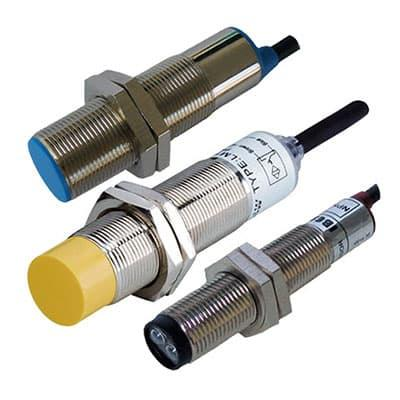
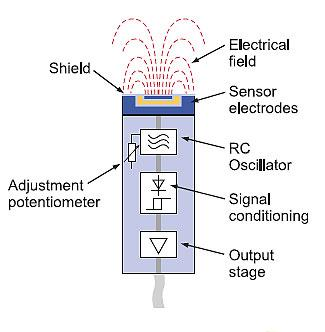
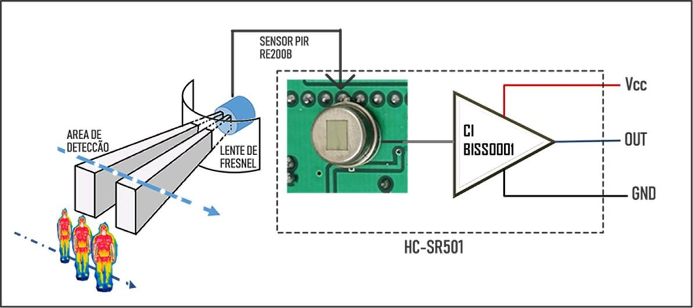
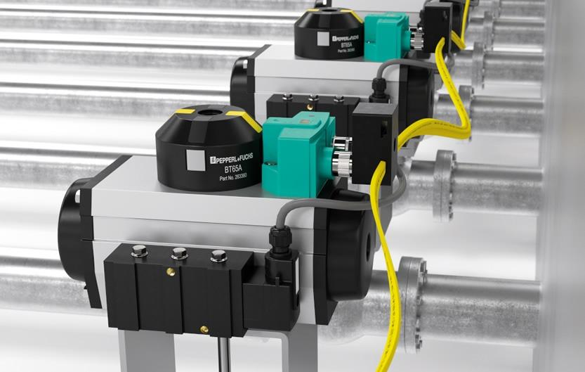

O que são sensores de proximidade?
Sensores de proximidade são dispositivos usados para detectar a presença ou ausência de objetos sem contato físico direto. Em sistemas industriais, essa característica é importante porque reduz desgaste mecânico, aumenta a vida útil dos componentes e permite respostas rápidas.
Eles aparecem em aplicações como contagem de peças, detecção de posição, controle de fim de curso, segurança operacional, monitoramento de presença e confirmação de etapas em linhas automatizadas.
Como eles diferem de chaves mecânicas?
Diferentemente de chaves mecânicas, que precisam ser pressionadas ou acionadas fisicamente, sensores de proximidade atuam por princípios físicos como campo eletromagnético, campo eletrostático ou radiação infravermelha.
Entre os tipos mais comuns estão sensores indutivos, sensores capacitivos e sensores infravermelhos passivos, conhecidos como PIR. Cada tecnologia deve ser escolhida conforme material detectado, alcance, ambiente e objetivo da aplicação.
Sensores indutivos
Sensores indutivos são amplamente usados na automação industrial para detectar objetos metálicos sem contato físico. Seu funcionamento se baseia na geração de um campo eletromagnético por uma bobina interna.
Quando um material metálico entra nesse campo, surgem correntes parasitas, também chamadas de correntes de Foucault. Essa alteração modifica o comportamento do oscilador interno e o circuito eletrônico gera um sinal de saída indicando presença.
Esses sensores são indicados para metais como aço, alumínio, cobre e latão. Também são robustos em ambientes com poeira, óleo e umidade, mas não detectam materiais não metálicos e normalmente têm alcance limitado a poucos milímetros ou centímetros.
Sensores capacitivos
Sensores capacitivos operam com base na variação de capacitância causada pela aproximação de um objeto. Eles criam um campo eletrostático ao redor da face sensora e detectam alterações na constante dielétrica do meio.
Ao contrário dos indutivos, sensores capacitivos conseguem detectar materiais metálicos e não metálicos, incluindo plástico, vidro, madeira, papel, líquidos e materiais granulados.

Essa versatilidade os torna úteis para detecção de nível em tanques, controle de presença em embalagens e monitoramento de sólidos ou líquidos. Como limitação, são mais sensíveis a umidade, poeira acumulada e sujeira, podendo gerar falsos acionamentos se a sensibilidade não for ajustada corretamente.
Sensores PIR
Sensores PIR, ou Passive Infrared, funcionam detectando variações na radiação infravermelha emitida por corpos quentes, como o corpo humano. Eles não emitem energia; apenas captam mudanças no ambiente térmico.
Quando uma pessoa se movimenta dentro da área de detecção, ocorre uma alteração no padrão de radiação infravermelha captado pelo sensor. Essa mudança gera um sinal de saída indicando presença ou movimento.

Eles são comuns em iluminação automática, segurança, controle de acesso e áreas de circulação eventual. Por dependerem de movimento e variação térmica, não são a melhor escolha para detecção precisa de objetos estáticos em processos industriais.
Critérios de seleção
A escolha do sensor não deve ser feita apenas pela tecnologia. O primeiro critério é o material a ser detectado: para metais, sensores indutivos tendem a ser a melhor opção; para materiais variados, líquidos ou sólidos não metálicos, sensores capacitivos são mais indicados; para presença humana e movimento, sensores PIR são mais adequados.
Também é necessário avaliar temperatura, umidade, poeira, vibração, interferência eletromagnética, distância de detecção, tipo de saída elétrica, alimentação, compatibilidade com CLPs, grau de proteção IP e montagem mecânica.

Exemplo prático: linha de envase
Imagine uma linha de envase com frascos plásticos, tampas metálicas e operadores próximos à máquina. Não existe um único sensor ideal para todos os pontos da aplicação.
Para confirmar se a tampa metálica foi posicionada corretamente, o sensor mais indicado é o indutivo. Quando a tampa entra na região de detecção, o sensor envia sinal ao CLP; se ela não for detectada, a máquina pode bloquear o avanço ou acionar um alarme.
Para verificar líquido dentro de um reservatório plástico, o sensor capacitivo é mais adequado, pois consegue detectar material não metálico através da parede do tanque. Já para economizar energia em uma área de circulação eventual, um sensor PIR pode acionar a iluminação quando detectar movimento de operadores.
Resumo
Sensores indutivos, capacitivos e PIR resolvem problemas diferentes. O indutivo é excelente para metais, o capacitivo é versátil para materiais variados e o PIR é útil para presença humana e movimento.
A correta seleção desses sensores impacta diretamente a confiabilidade do sistema, reduz falhas e melhora a eficiência do processo industrial.